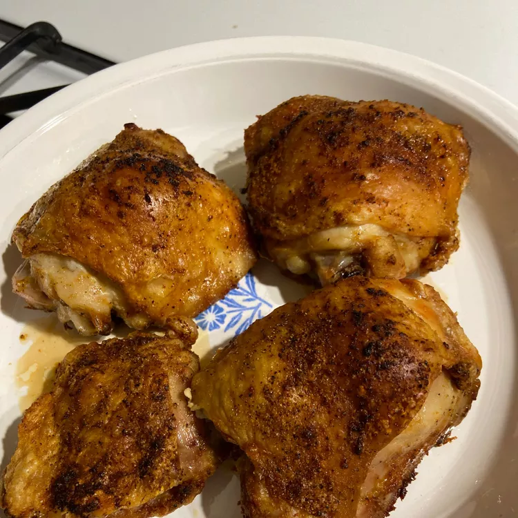

Air Fryer Chicken Thighs

Description:
These tasty air fryer chicken thighs have juicy meat and crispy skin; you will love this quick chicken recipe
that is ready for the table in less than 30 minutes!
Ingredients:
- Chicken thighs
- Olive oil
- Spices and seasonings
How to Make Chicken Thighs In the Air Fryer Step-By-Step:
Here's a very brief overview of what you can expect when you make air fryer chicken thighs:
- Pat the thighs dry and brush the skins with olive oil.
- Make the spice blend and sprinkle it all over the thighs.
- Cook in the preheated air fryer until the skin is brown and the juices run clear.
Main Page